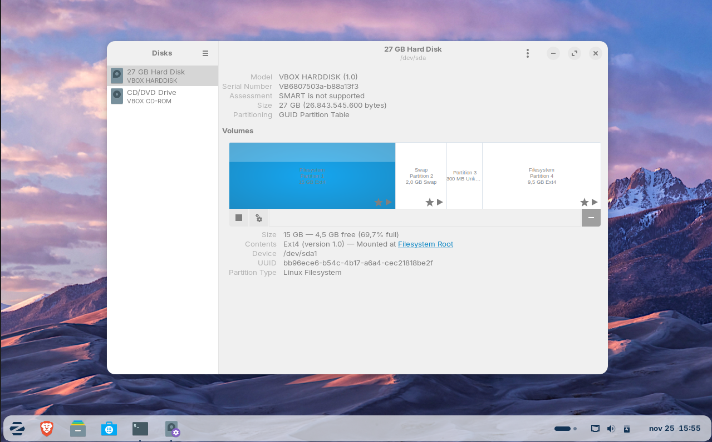
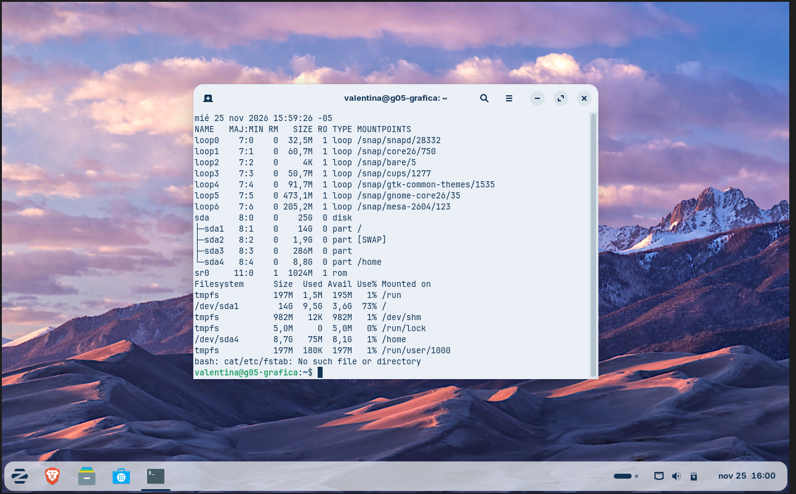
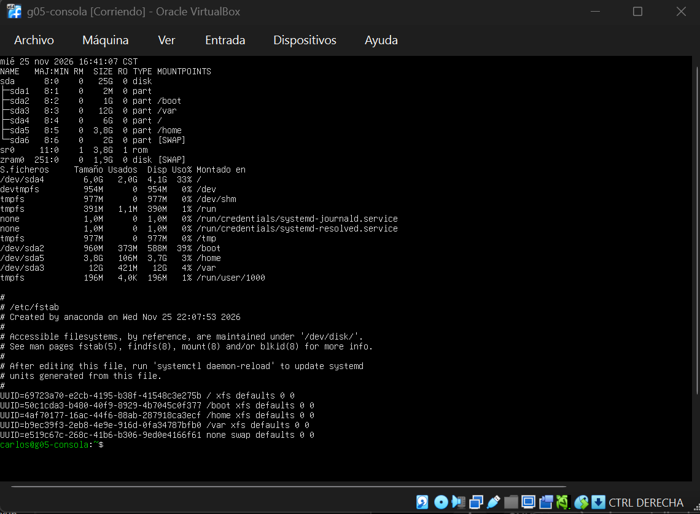
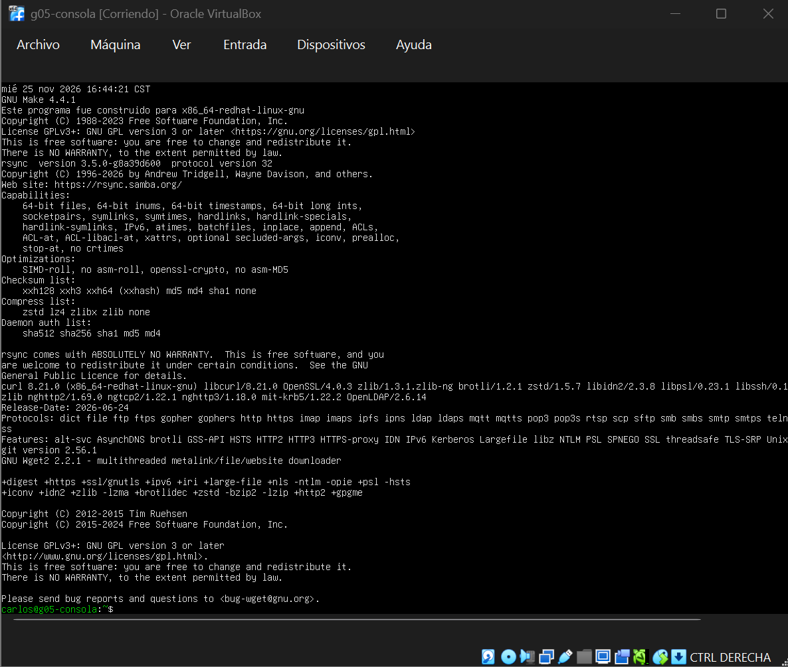
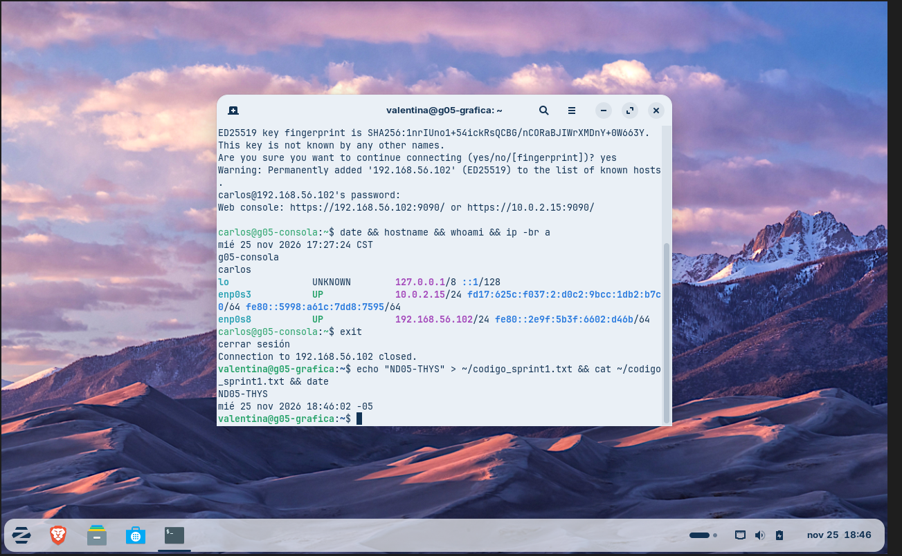

Proyecto Final de Sistemas Operativos · Grupo 05 · Universidad del Valle
Integrantes: Valentina Rendón Plaza, Carlos Alberto Loaiza Mosquera y Matías Sánchez Erazo.
| Integrante | Parte que hizo |
|---|---|
| Valentina Rendón Plaza | VM gráfica (g05-grafica): particiones, programas, red, cliente SSH, instantánea y código del sprint. |
| Carlos Alberto Loaiza Mosquera | VM consola (g05-consola): particiones, herramientas, red, servidor SSH, instantánea y código del sprint. |
| Matías Sánchez Erazo | Esta página web y el video del sprint. |
| Máquina virtual | Sistema operativo | Usuario principal | vCPU | RAM | Disco | IP NAT | IP solo-anfitrión |
|---|---|---|---|---|---|---|---|
| g05-grafica | Zorin OS 18.1 | valentina | 2 | 4096 MB | 25 GB | 10.0.2.15 (DHCP) | 192.168.56.101 |
| g05-consola | Fedora Server | carlos | 2 | 2048 MB | 25 GB | 10.0.2.15 (DHCP) | 192.168.56.102 |
ESCRIBIR AQUÍ qué hicimos para instalar la VM gráfica con particionado manual y qué programas instalamos.
| Partición | Punto de montaje | Sistema de archivos | Tamaño (lsblk) | Por qué ese tamaño |
|---|---|---|---|---|
| sda1 | / | ext4 | 14 G | ESCRIBIR UNA FRASE |
| sda2 | swap | swap | 1,9 G | ESCRIBIR UNA FRASE |
| sda3 | sin montar | sin sistema de archivos | 286 M | ESCRIBIR qué es esta partición |
| sda4 | /home | ext4 | 8,8 G | ESCRIBIR UNA FRASE |
date lsblk df -h


date, lsblk y df -h.| Tipo | Programa | Versión que se ve en la captura |
|---|---|---|
| Navegador 1 | Web (GNOME Web) | 46.5 |
| Navegador 2 | Brave | 158.1.100.59 |
| Editor 1 | Vim | 9.1 |
| Editor 2 | ESCRIBIR AQUÍ el segundo editor | versión |
Comandos usados: ESCRIBIR AQUÍ los comandos que ejecutamos para mostrar las versiones.


ESCRIBIR AQUÍ qué muestra cada captura de este punto, con sus palabras.
Montamos la máquina virtual g05-consola con Fedora Server en modo texto asignando 2 núcleos de CPU, 2048 MB de RAM y 25 GB de disco duro. En el instalador Anaconda seleccionamos la configuración de almacenamiento personalizada para crear a mano todas las particiones en formato xfs más la partición swap, respetando los mínimos pedidos en la guía. Luego ingresamos con el usuario carlos e instalamos con dnf las herramientas de terminal: make, rsync, curl, git y wget.
| Partición | Punto de montaje | Sistema de archivos | Tamaño (lsblk) | Mínimo del documento | Por qué ese tamaño |
|---|---|---|---|---|---|
| sda1 | sin montar | — | 2 M | — | Partición BIOS Boot que crea automáticamente el instalador de Fedora para guardar el gestor de arranque GRUB en discos GPT. |
| sda2 | /boot | xfs | 1 G | — | Es el tamaño estándar que recomienda Fedora para guardar el kernel y los archivos de arranque sin quedarse corto en actualizaciones. |
| sda3 | /var | xfs | 12 G | 10 GB | Le dimos 2 GB por encima del mínimo porque ahí se guardan los logs del sistema, la caché de paquetes y datos de servicios. |
| sda4 | / | xfs | 6 G | 5 GB | Supera el mínimo de 5 GB para instalar el sistema base y las herramientas de consola con buen margen libre. |
| sda5 | /home | xfs | 3,8 G | 1 GB | Se dejó con casi 4 GB para que el usuario carlos tenga espacio de sobra para sus archivos y scripts sin llenar la raíz. |
| sda6 | swap | swap | 2 G | 1 GB | Igualamos los 2 GB de memoria RAM asignados a la VM para tener respaldo de memoria virtual cuando haya varios procesos corriendo. |
sudo dnf install make rsync curl git wget date lsblk df -h cat /etc/fstab date make --version rsync --version curl --version git --version wget --version

lsblk, df -h y cat /etc/fstab, con la fecha al inicio.
La primera captura muestra la distribución completa de las seis particiones en el disco de 25 GB mediante lsblk, el porcentaje de espacio ocupado en cada una con df -h y el archivo /etc/fstab donde se verifica que quedaron configuradas para montarse solas al encender la máquina. La segunda captura confirma que las cinco herramientas (make, rsync, curl, git y wget) quedaron instaladas y responden correctamente al consultar su versión.
En la máquina de consola habilitamos e iniciamos el servicio SSH con systemctl enable --now sshd y revisamos con ss -tuln que el puerto 22 estuviera abierto y escuchando conexiones. Luego, desde la terminal de g05-grafica, nos conectamos por SSH al usuario carlos usando su IP de red solo-anfitrión (192.168.56.102), aceptamos la clave del servidor e ingresamos la contraseña.
# En g05-consola (servidor) sudo systemctl enable --now sshd ss -tuln # En g05-grafica (cliente) ssh carlos@192.168.56.102 # Ya dentro de la sesión SSH date && hostname && whoami && ip -br a

La captura muestra cómo, después de ejecutar el comando ssh desde valentina@g05-grafica, la terminal pasa a controlar la sesión de carlos@g05-consola. Al correr hostname, whoami e ip -br a dentro de esa conexión se comprueba que efectivamente estamos ejecutando comandos de forma remota dentro de la máquina Fedora.
Cuando ya teníamos ambas máquinas instaladas, configuradas en red y probadas por SSH, las apagamos por completo desde el sistema y tomamos una instantánea llamada instalacion-limpia en VirtualBox para cada una. Las tomamos con las máquinas apagadas para que no queden archivos abiertos ni datos a medias en la memoria RAM, asegurando un respaldo totalmente limpio.
| VM | Nombre de la instantánea | Estado de la VM | Hora en que se tomó |
|---|---|---|---|
| g05-grafica | instalacion-limpia | Apagada | 25/11/2026, 7:06 p. m. |
| g05-consola | instalacion-limpia | Apagada | 25/11/2026, 7:07 p. m. |


Las capturas de VirtualBox confirman que tanto g05-grafica como g05-consola quedaron guardadas con su instantánea instalacion-limpia en estado apagado. Esto nos sirve como punto de restauración seguro por si en los siguientes sprints dañamos alguna configuración y necesitamos volver al estado inicial sin reinstalar todo desde cero.
Código del Sprint 1: ND05-THYS
# En g05-grafica echo "ND05-THYS" > ~/codigo_sprint1.txt && cat ~/codigo_sprint1.txt && date # En g05-consola echo "ND05-THYS" > codigo_sprint1.txt && cat codigo_sprint1.txt && date

codigo_sprint1.txt en el home de valentina.
codigo_sprint1.txt en el home de carlos.Video de máximo 3 minutos, grabado en pantalla continua y sin cortes.
Ver el video del Sprint 1 en YouTube
Usamos Claude (Anthropic) y Gemini (Google) como apoyo para estructurar el código HTML de esta página y organizar en tablas los datos técnicos obtenidos de nuestras capturas (tamaños de particiones, direcciones IP y versiones). Todas las instalaciones, configuraciones, pruebas en terminal, capturas de pantalla y el video fueron realizados directamente por los integrantes del grupo en nuestras máquinas virtuales.